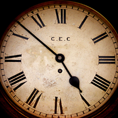
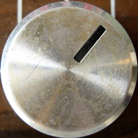
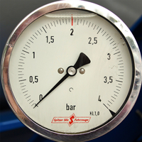
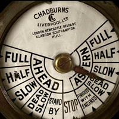

Test on Dials with different value ranges
- 
Range is one revolution
1
- 
Range wraps around the dial one or more times
2
- 
Range is < one revolution. The wrap point is in the range
3
Range is < one revolution. No wrap point in either the range nor out of range section
4
- 
Range is < one revolution. wrap point found in out of range section
5